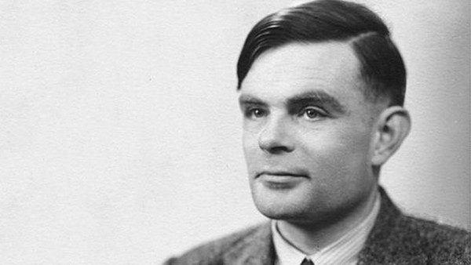

Bienvenu, sur cette page dédiée à Turing et ces différentes découvertes et exploi.
Alan Mathison Turing, né le 23 juin 1912 à Londres et mort le 7 juin 1954 à Wilmslow,
est un mathématicien et cryptologue britannique, auteur de travaux qui fondent scientifiquement l'informatique.
Durant la Seconde Guerre mondiale, il joue un rôle majeur dans la cryptanalyse de la machine Enigma utilisée par les armées allemandes.
l'invention de machines usant de procédés électroniques, fera passer le décryptage à plusieurs milliers de messages par jour.
Pour résoudre le problème fondamental de la décidabilité en arithmétique, il présente en 1936 une expérience de
pensée que l'on nommera ensuite machine de Turing et des concepts de programme et de programmation,
qui prendront tout leur sens avec la diffusion des ordinateurs, dans la seconde moitié du xxe siècle.
